Research Narrative / 研究叙事
对象界定 以小马力拖拉机为对象，识别影响外观感知的核心语义维度。 证据获取 结合车型样本、感性评价与统计检验建立研究证据。 参数转译 将整车感知拆解为构件轮廓、比例关系与视觉重心。 成果转化 形成外观迭代依据，并沉淀为核心与EI论文成果。
Summary / 项目摘要
本项目以井关集团小马力拖拉机为研究对象，考察可靠感、力量感、亲和度与品牌识别等感知判断如何对应前脸、灯具、机罩、驾驶舱及整车比例等造型要素，并据此形成可进入方案评价与外观迭代的设计依据。
Research Focus / 研究对象与问题
用户如何形成外观感知？ 识别影响可靠感、力量感、亲和度与品牌识别的核心感性意象。
感知判断如何进入造型决策？ 把整车评价拆解为构件轮廓、比例关系、视觉重心与家族化特征。
Evidence Scale / 研究证据规模
8组车型样本 覆盖不同品牌与典型造型特征，建立可比较的外观样本集。
101份有效问卷 围绕6组核心语义词对完成评价，Cronbach's α > 0.8。
3类构件 · 10项变量 聚焦前大灯、引擎盖与进气格栅，完成轮廓提取与数字编码。
KMO 0.753 采用因子分析提炼感知维度，Bartlett 检验 p < 0.01。
Research Design / 研究设计
样本与品牌筛选 视觉关注区识别 语义差异评价 信效度检验 因子分析 形态特征编码 参数映射 方案迭代
Research Evidence / 研究证据
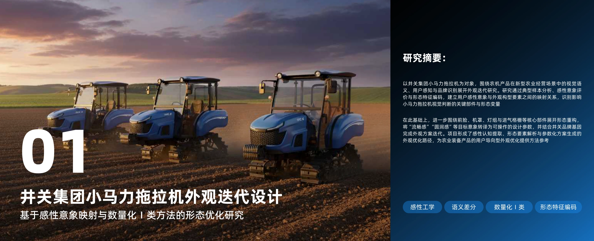
研究摘要与项目定位。 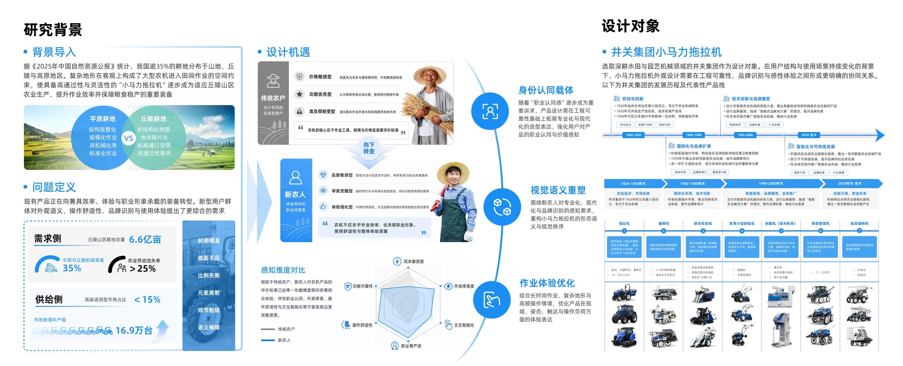
研究背景、问题定义与设计对象。 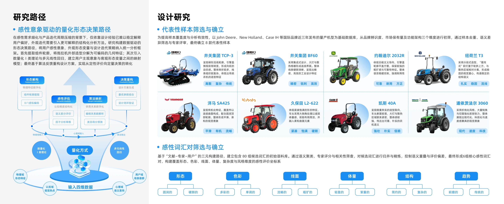
研究路径与代表性样本筛选。 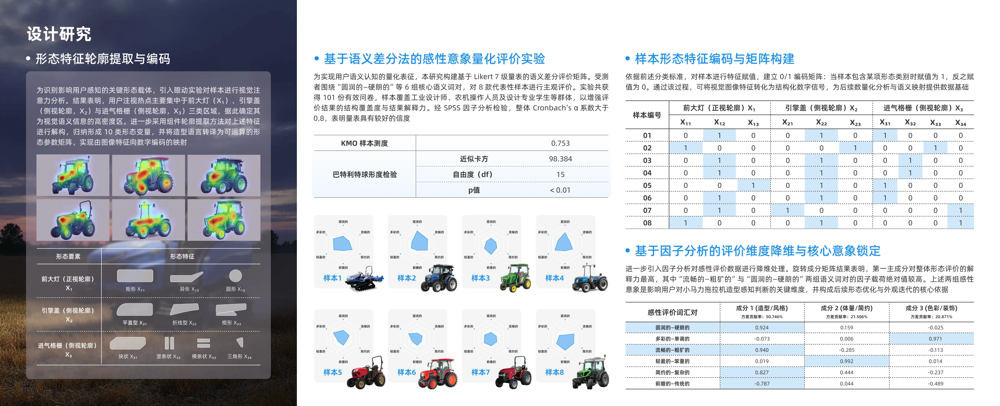
形态特征编码与感性意象评价。 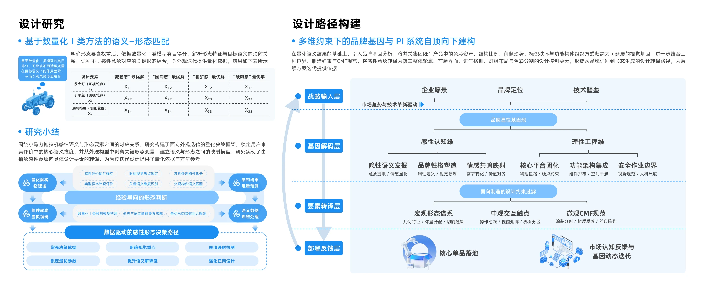
语义与形态匹配及设计转译策略。 品牌视觉基因解构与设计实践。 外观迭代方案展示。 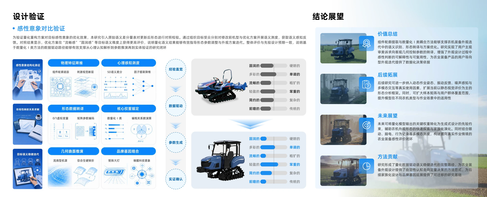
感性意象对比验证与研究总结。
Key Findings / 主要研究发现
关键载体识别 前大灯、引擎盖与进气格栅是影响整车感知判断的主要形态载体。
维度结构提炼 因子分析将外观意象归纳为造型风格、体量简约与色彩装饰三个主要维度。
参数关系建立 构件轮廓、前脸比例和视觉重心可转化为方案比较与迭代判断的形态参数。
Design Response / 设计回应
感知目标 形态变量 设计回应
可靠感 前脸宽高比例、横向秩序 提高前脸稳定性，强化构件秩序与对称关系。 力量感 机罩体量、下部视觉支撑 增强机罩整体性与下部支撑，使整车更稳重。 亲和度 灯具表情、轮廓曲率 控制折线锋利程度，降低攻击性并提升亲和感。 品牌识别 家族化前脸、色彩关系 延续品牌识别特征，形成系列化外观语言。
Project 02 / Service Study
面向二手家具循环流通的用户端服务系统设计
面向二手家具循环流通的用户需求研究与服务系统设计
SIVA需求提取 Kano分类 AHP权重 PSS构建 SUS评价
本项目研究二手家具再次流通过程中的用户决策问题，重点考察家具状态、估值依据、交易信任、物流履约与售后责任等因素，并将用户需求转化为检测估值、交易匹配、物流履约、售后追踪和循环价值展示等服务触点。
Research Narrative / 研究叙事
问题界定 识别二手家具流通中的交易信任、估值、履约与循环价值问题。 需求分析 结合SIVA、Kano、Better-Worse与AHP形成需求优先级。 系统构建 组织平台、检测、翻新、物流与售后主体的服务关系。 原型评价 通过服务蓝图、交互原型与SUS评价验证用户端方案。
Summary / 项目摘要
本项目研究二手家具再次流通过程中的用户决策问题，重点考察家具状态、估值依据、交易信任、物流履约与售后责任等因素，并将用户需求转化为检测估值、交易匹配、物流履约、售后追踪和循环价值展示等服务触点。
Research Focus / 研究对象与问题
交易信任如何建立？ 明确家具状态、来源、估值依据与售后责任的可核验信息。
需求如何转为服务功能？ 将信任、价格、交付与循环价值组织为可执行的服务触点。
线上线下如何协同？ 协调平台、检测、翻新、仓储物流与售后主体的服务关系。
Evidence Scale / 研究证据规模
96份 × 26项 形成2,496组Kano正反向需求配对判断，信度α=0.925，KMO=0.880。
26项用户需求 S7、I8、V6、A5，覆盖价值、信息、便利与服务四类需求。
10位 × 20项 由10位专家完成20项核心需求的AHP权重判断，用于校准功能优先级。
37人 × 10题 累计获得370项SUS量表评分，平均82.86分，达到Grade A。
Research Design / 研究设计
探索性预调研 SIVA需求提取 Kano需求分类 Better-Worse分析 AHP权重排序 PSS关系构建 服务蓝图与原型 SUS评价
Research Evidence / 研究证据
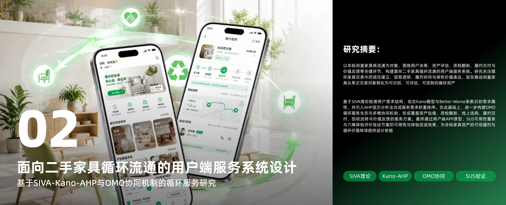
循环家具项目研究摘要。 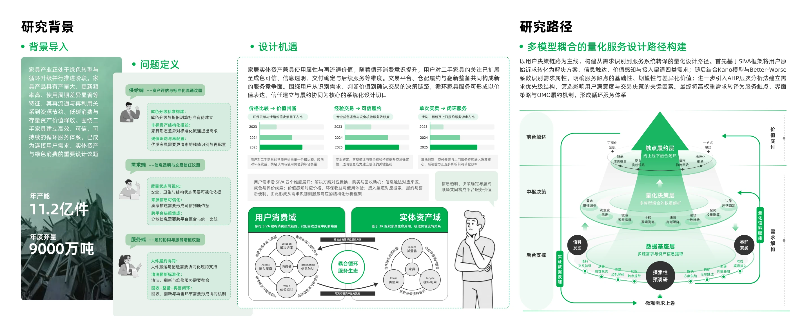
研究背景、设计对象与研究路径。 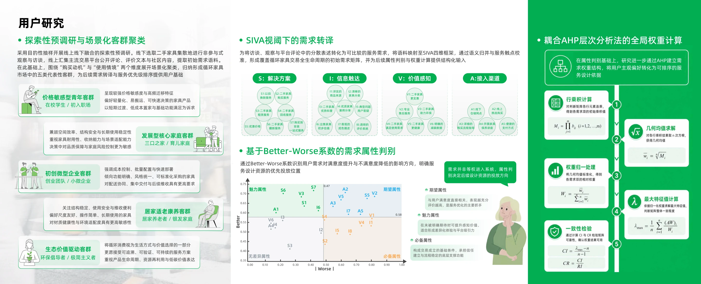
SIVA需求识别与Kano分类。 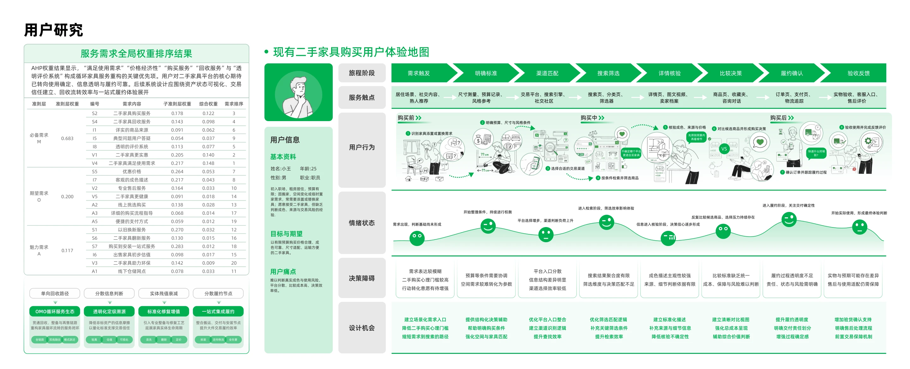
AHP需求权重与服务流程。 系统架构与OMO服务协同。 用户端APP原型与需求转译。 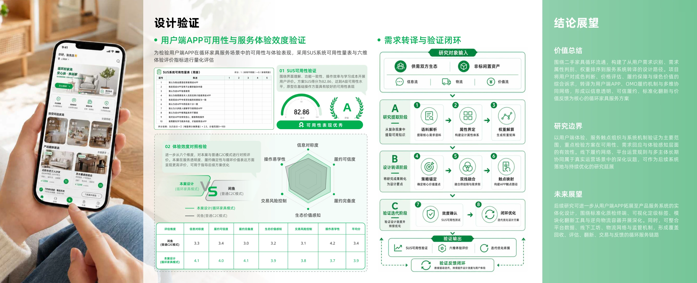
SUS可用性评价与研究总结。
Key Findings / 主要研究发现
需求优先级 信息透明、交易信任、履约便利与服务保障构成用户优先关注的需求。
服务系统结构 平台估值检测、质量评价、回收翻新、预约配送和订单追踪是关键服务触点。
原型评价 用户端原型获得较高SUS评分，支持其功能结构与操作流程的可用性判断。
Design Response / 设计回应
用户问题 系统回应 设计落点
状态不透明 建立标准化检测与分级机制 损伤标注、修复记录与质量说明。 价格依据不足 提供可解释的估值信息 在线估值、价格区间与历史参考。 履约过程割裂 串联交易与交付节点 预约、物流、交付与售后状态追踪。 循环价值感知弱 强化循环价值的可见性 环保标签、循环记录与价值可视化。
Project 03 / System Study
面向检查检验互认的跨院诊断报告共享系统设计
面向检查检验互认的跨院报告共享与授权机制研究
政策与标准梳理 多主体需求 QFD转译 信息架构 任务评价
本项目以跨院复诊、转诊接续和会诊互通为主要场景，研究检查检验报告在跨机构使用中的来源核验、患者授权、互认状态与访问记录问题，并围绕患者、医生、医疗机构和信息平台之间的任务关系与权限边界展开系统设计。
Research Narrative / 研究叙事
对象界定 以跨院复诊、转诊接续和会诊互通为核心使用场景。 需求转译 结合政策标准、多主体需求与QFD形成系统设计要求。 系统构建 围绕来源核验、患者授权、统一索引与访问追踪组织功能。 原型评价 通过小样本任务测试与专家走查定位交互问题和迭代方向。
Summary / 项目摘要
本项目以跨院复诊、转诊接续和会诊互通为主要场景，研究检查检验报告在跨机构使用中的来源核验、患者授权、互认状态与访问记录问题，并围绕患者、医生、医疗机构和信息平台之间的任务关系与权限边界展开系统设计。
Research Focus / 研究对象与问题
患者侧 如何清楚掌握报告来源、授权范围、互认状态与访问记录？
医生侧 如何快速判断报告来源、完整状态与可参考信息？
系统侧 如何协调患者、医生、医疗机构与平台之间的权限和任务关系？
Evidence Scale / 研究证据规模
15项候选需求 覆盖统一索引、来源核验、授权管理与连续追踪，经QFD进入设计机会排序。
5项核心能力 统一索引、可信核验、动态授权、互认辅助与连续追踪。
5项关键任务 报告查找、共享授权、可信核验、使用追踪与趋势查看。
88.9%完成率 平均完成时间49秒，平均满意度4.08/5，用于定位交互问题与迭代方向。
Research Design / 研究设计
政策与标准梳理 多主体角色识别 核心场景聚类 任务链拆解 QFD需求转译 信息架构设计 高保真原型 任务测试与走查
Research Evidence / 研究证据
跨院报告共享项目研究摘要。 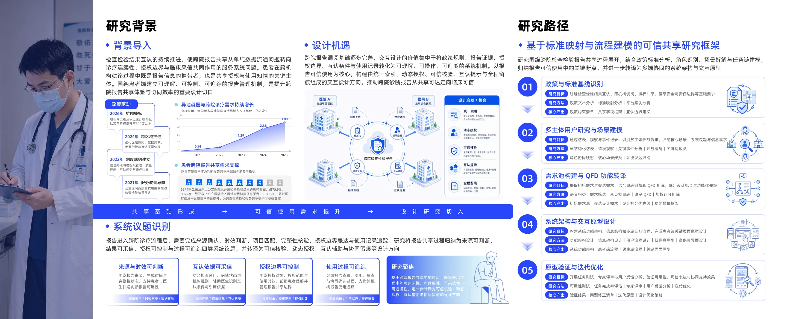
研究背景、设计机遇与研究路径。 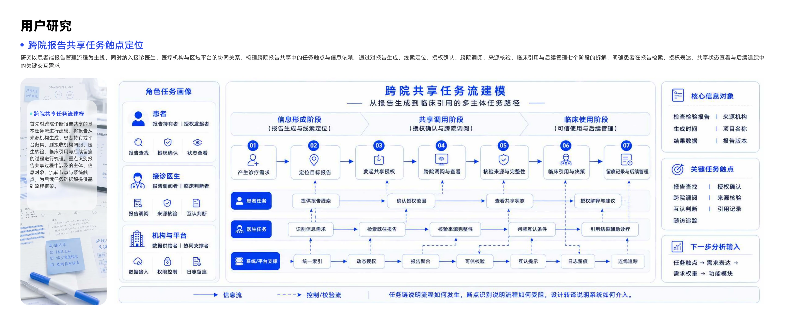
跨院共享任务链与使用场景分析。 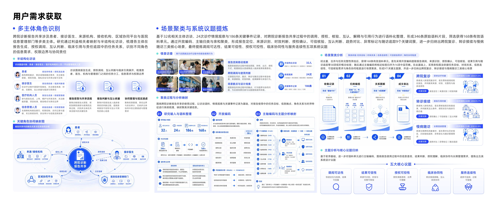
利益相关者识别与半结构化访谈。 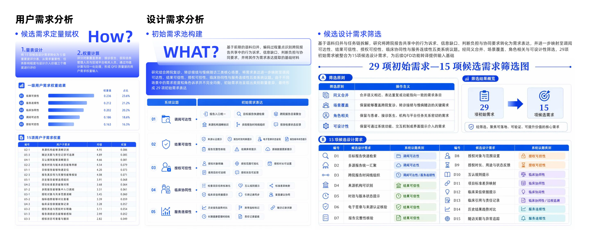
用户需求分析与候选需求筛选。 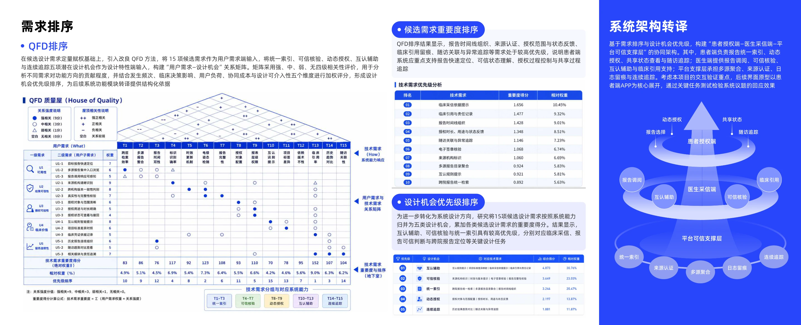
QFD需求排序与系统架构转译。 患者端APP核心界面。 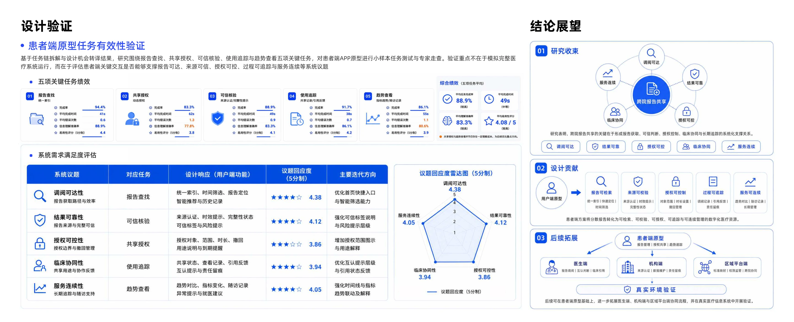
患者端原型任务有效性验证。
Key Findings / 主要研究发现
信息可信 报告来源、时间、完整状态与核验标识是跨院调阅时优先确认的信息。
授权可控 授权对象、范围、时效、撤回与使用记录需要在同一任务链中清晰呈现。
服务连续 统一索引、结构化摘要与连续追踪有助于降低跨机构报告使用的理解成本。
Design Response / 设计回应
使用问题 系统回应 设计落点
来源难判断 建立报告可信识别 机构、时间、完整状态与核验标识。 授权边界不清 提供动态授权控制 对象、范围、时效、撤回与到期提醒。 重点信息难读取 组织结构化摘要 异常项提示、历史对比与关键信息提取。 跨院使用难追溯 保留全过程记录 查看记录、共享路径与访问日志。